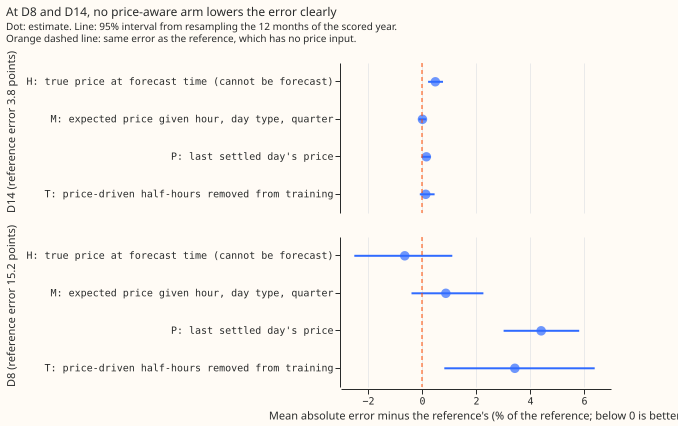
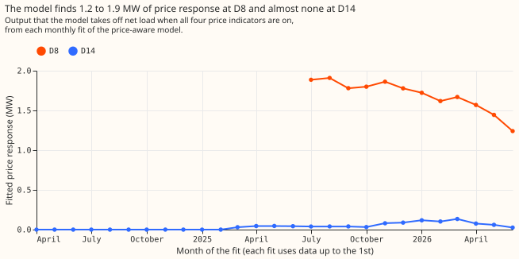

Experiment 191: can price-following assets be modelled in the history so the forecast improves?
Take-home message: modelling a price-following asset in the history does not improve the forecast
at D8 or D14. D8 and D14 are two primary substations of National Grid Electricity Distribution
(NGED) in the Boston area. A price-following asset is a generator or battery whose output follows
the electricity price. Experiment
186 found that D8's multi-day
drops in demand look partly like a gas engine that runs when the spark spread is positive. The spark
spread is the system price minus the gas cost of generating one MWh of electricity. In the data we
have, a price is not forecastable days ahead, so we asked a narrower question: if the demand model
sees the price in its training history, does it learn a cleaner picture of the rest of the demand,
and does the forecast improve even when the price is unknown at forecast time? We added four price
indicators to a convex demand model (GAM-K, a generalised additive model with a Kalman filter on
recent errors), each lowering net load by a fitted, non-negative amount, switched on from the
connection date of a registered 6 MW gas engine. We tested four arms (H, M, P and T, defined under
Arms) that differ in what stands in for the price at forecast time, and scored the forecasts on the
year 2025-07 to 2026-06, which no fit had seen. The best arm, H, which uses the true price at
forecast time and so cannot run live, lowers D8's mean absolute error by 0.6%, with a 95% interval
that includes zero. The pre-registered bar was a 5% fall, so the verdict is not supported. The
reference demand model reproduces experiment 152 to numerical precision (see Checks), and the gas
engine's response is visible in the fitted coefficients, but the response does not carry forward to
the scored year.


Inputs and arms
- The register. NGED's Embedded Capacity Register (August 2026) lists one connected gas engine
that is not combined heat and power under the Primaries with metered series: 6 MW, connected on
2023-06-13, 0.4 km from D14's coordinates and about 0.8 km from D8's. D8 itself lists only solar
and a 1.35 MW row of unknown type. D5 has a 1 MW gas engine connected in 2021. Batteries of 0.2 to
0.25 MW are connected at D2, D9, and D11 (2024 to 2026), and two more are accepted but not
connected, at D3 and D16. The demand-side-response sheet holds no rows. The eight other Primaries
that the register covers list no price-following asset (
printed_ecr.txt). - Reference (A0). The ensemble-driven convex demand model of experiment 152 (fitted solar capacity, monthly refits on a 24-month window, shared Kalman filter, spread fitted on tuning months), with no price input. At D8 it has 12 monthly fits from 3 to 14 months of history, because the series is valid only from 2025-04-01. At D14 it has 27 fits. It is not the best-guess stack of experiment 155: the winter night offset and the 14-day error profile are absent, because D8 has no tuning months to fit the offset on. At D14 the reference's mean absolute error is 3.84 points against 3.69 for the best-guess stack.
- Arms. H uses the true price at forecast time (a ceiling). M uses the expected indicator given the half-hour of the day, day type and quarter. P uses the last settled day's indicator at the same half-hour, the only price known at the 09:00 UTC origin. T removes the half-hours that the fitted price term explains from training and forecasts without a price term. A diagnostic arm (JB) is the price-aware fit's base model with its price term switched off at forecast time. The learned monotone price curve (the plan's optional neural arm) was not run.
- Price indicators. System price above its 50th, 75th, and 90th percentile, and a positive spark spread at 40% efficiency (system price minus the gas cost of one MWh of electricity minus 5 pounds per MWh), from public data, 2023-06 to 2026-06 (2023-05-31 to 2026-07-01 in UTC). The percentile thresholds are fixed over the whole of that price history, including the scored year, so the cut-off values (not any individual price) look ahead slightly; the "high price" scoring cut shares that definition. The gate is 1 from the engine's connection date and 0 before, so a site with no asset has no price term.
- Masking rule (fixed after one coefficient check, before any score was read). T drops a training half-hour when the fitted price output there is at least 25% of the largest fitted output and that largest output is at least 1 point (1% of the substation's effective capacity). Without the 1-point floor the rule dropped half of D14's training rows for a response of 0.04 MW.
Results
- Absolute scores (D8, scored year, all rows, leads 0.5 to 168 hours). Reference: mean absolute error 15.18 points (1.6 MW), quantile score 10.95, q05-to-q95 coverage 0.42 (42%). D14: mean absolute error 3.84, quantile score 2.16, coverage 0.89.
- Mean absolute error against the reference, D8. H -0.64% (-2.53% to +1.11%), M +0.88% (-0.37% to +2.28%), P +4.41% (+3.00% to +5.83%), T +3.44% (+0.84% to +6.41%), JB +5.73% (+2.56% to +8.66%). The quantile score gives the same signs: H -1.04%, M +1.00%, P +5.36%, T +4.56%.
- Mean absolute error against the reference, D14. H +0.49% (+0.23% to +0.78%), M +0.02%, P +0.16%, T +0.14%, JB -0.13% (-0.54% to +0.24%).
- High-spread half-hours (spark spread above zero), D8. The reference's error is 16.37 points against 13.96 on other half-hours. H -0.74%, M +1.08%, P +3.73%, T +5.27%. No arm is significantly better where the price signal should be strongest.
- By lead, D8, H. The quantile score falls 2.2% (interval -4.3% to -0.05%, not corrected for the number of cuts) at 0 to 24 hours, 1.8% at 24 to 72 hours and 0.4% at 72 to 168 hours.
- In-sample gain (the ceiling). On each fit's own training rows the price columns lower D8's mean absolute error by 4.1% on average over the 12 fits (2.7% to 4.8%). The fitted response, with all four indicators on, is 1.9 MW at the first fit and 1.2 MW at the last. At D14 the in-sample gain is 0.0% and the response is 0 to 0.13 MW. At D5 it is 0.0%.
- No-harm check. The largest rise in quantile score at any of the five decision Primaries (D5, D10, D11, D14, D16) is 0.011 points, at D14 for H, against the 0.02 limit. With the gate switched on for the whole history at sites with no asset (placebo), D10 rises by 0.009 points for H.
- Tails. At D8 the reference's q05 quantile lies above 30.8% of readings (nominal 5%), q95 above 73.1% (nominal 95%), q01 above 20.6% (1%) and q99 above 83.9% (99%). H changes none of them by more than 0.5 points. D14 is close to nominal (q05 6.4%, q95 95.1%). The D8 spread comes from six other Primaries and is far too narrow for D8, so D8's quantile scores are weaker evidence than its mean absolute errors.
- Post hoc: settlement-day indicators. Replacing the half-hourly indicators by the settlement day's mean price and spread lowers nothing: D8 H +2.23% (+0.42% to +4.28%), M +2.40%, P +3.83%, T +5.75%.
- Not computed. The curtailment-cost metric (it needs a node and its generators) and the climatology and manual-heuristic baselines named in the plan's benchmark, so absolute skill is reported against the reference only.
- Intervals. The intervals printed here are 95% month-block bootstrap intervals. The plan registered a 99.4% Bonferroni level, which would widen every interval and cannot change the verdict, because H's 95% interval already includes zero.
- Post hoc daily variant, arm P. In the settlement-day variant below, arm P uses a day mean that can include half-hours after the 09:00 UTC origin, so that one P row is not a live arm.
- Schedule. Monthly refits on a 24-month window, as in experiment 152, not weekly refits, so the absolute scores are not production-setting scores. The contrasts could depend on the schedule at D8, where a longer history would help the price columns.
Checks
- Control. The reference reproduces the stored arm N of experiment 152 at D8 (mean absolute gap
1e-12 on 97,012 rows) and
studies.dp_gam.fit_gamat one cut (largest coefficient gap 2e-10). Where the gate is off (D10, D11, D16) every arm equals the reference. - Median minus mean forecast. 0.000 points at every site and arm, because the spread is symmetric about the corrected mean.
- Mean-forecast error beside the quantile score. Both are reported in Results and have the same sign in every contrast of the main tables.
- Audit triggers. Trigger 2 fired: H gained 0.6% against a pre-registered 5%. The explanation was tested and is the in-sample figure: even on the rows the price columns are fitted to they explain at most 4.8%. Trigger 5 fired: at D14 H, which contains the reference, is 0.49% worse than the reference. JB, which keeps the base fit and drops the price term, is within 0.13% of the reference, so the loss comes from the price term, whose coefficients move between 0 and 0.9 points from fit to fit. No Opus audit was run, because neither result changes the next step. Triggers 1, 3, 4, 6, and 7 did not fire.
Open questions
- Does a spread fitted on D8's own residuals change the picture? The reference covers 42% of readings where it should cover 90%, so D8's interval scores are weak evidence.
- Does a wider band on spark-spread-positive days help? D8's error is 17% larger on those half-hours. This was not tested.
- What does the engine's own output show? The price indicators reach at most 4.8% of the error on their own training rows, and the engine's half-hourly output would test the cause directly.